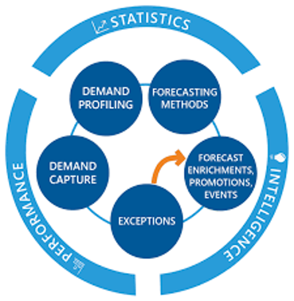
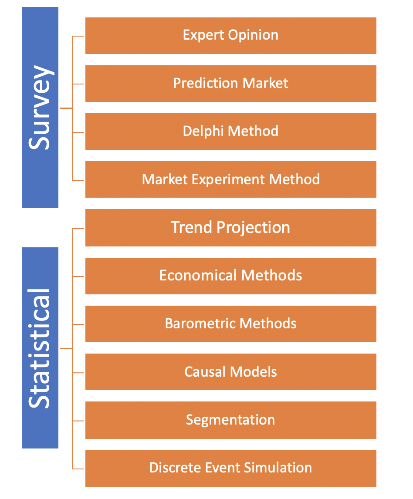
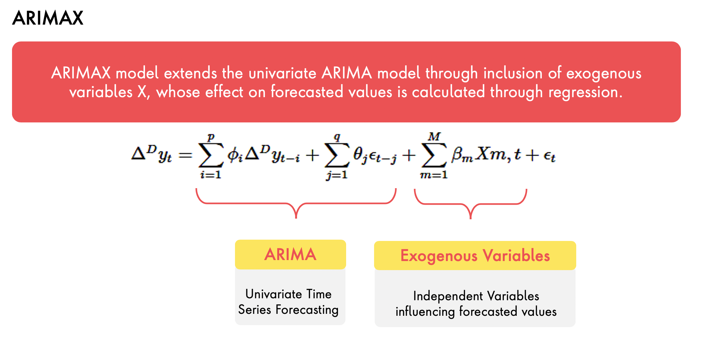
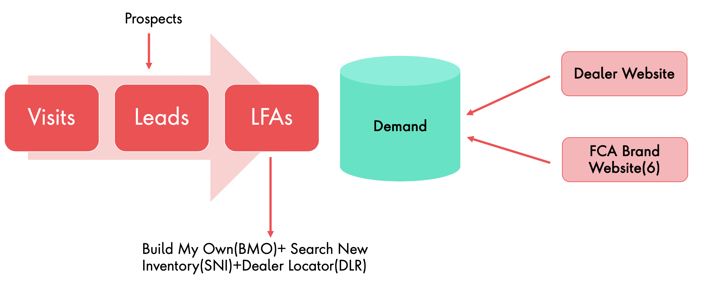
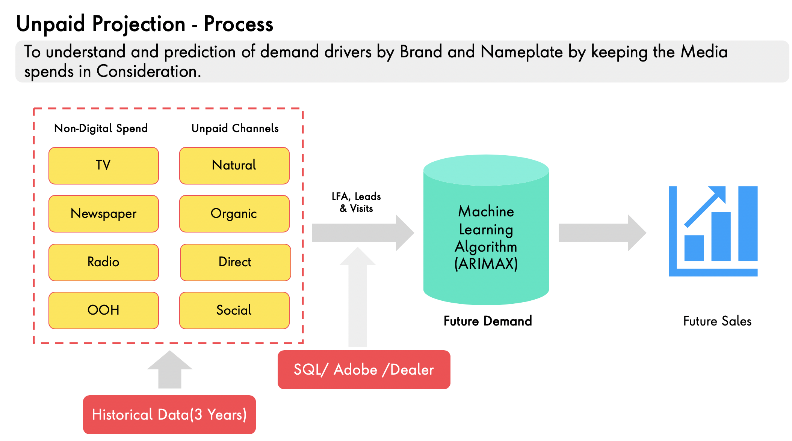
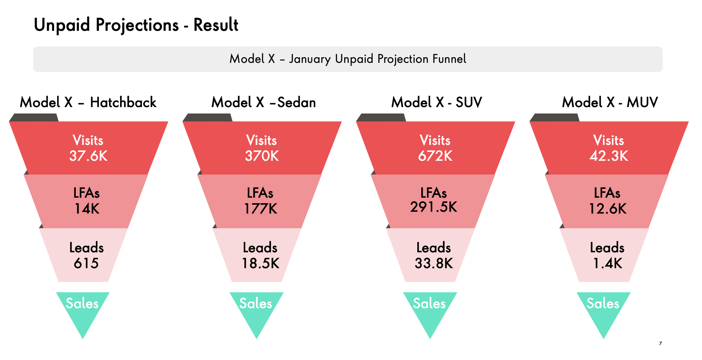
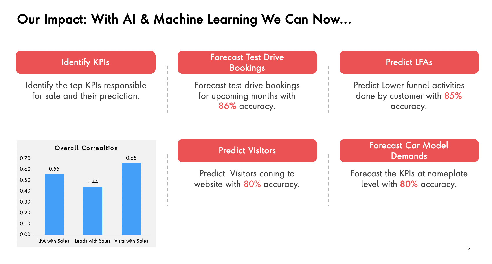

Last Updated: 2020-07-03
Rising AI 2020
Demand forecasting is a science or an art of predicting customer demands. These predictions are analyzed and leveraged to make key business decisions to optimize their supply chain and keep their costs lean.

One of the most common and direct methods of forecasting demand in the short term. This method encompasses the future purchase plans of consumers and their intentions. Typically, an organization conducts surveys with consumers to determine the demand for their existing products and services and anticipate the future demand accordingly.
These are complex set of methods of demand forecasting used to forecast demand in the long term. In this method, demand is forecasted on the basis of historical data and cross-sectional data.

Another perspective of looking at forecasting can be also
Now that we understand the techniques of forecasting and the client impact, let's think about some of the other factors that needs to be considered while designing such system
Causal forecasting is the technique that assumes that the variable to be forecast has a cause-effect relationship with one or more other independent variables. Causal techniques usually take into consideration all possible factors that can impact the dependent variable.
The ARIMA model (Auto-Regressive Integrated Moving Average) analyzes the time data to predict the future data points. The biggest advantage of this model is that it can be applied in cases where the data shows evidence of non-stationarity.
Below is the interpretation of the ARIMA
The ARIMAX (Autoregressive Integrated Moving Average with Explanatory Variable)model can be viewed as a multiple regression model with one or more autoregressive (AR) terms and/or one or more moving average (MA) terms. This method is suitable for forecasting when data is stationary/non stationary, and multivariate with any type of data pattern, i.e., level/trend /seasonality/cyclicity
Below is the interpretation of the ARIMAX

Let's look at how we applied these techniques to solve the business problem for one of our automotive client.

How did we apply our customized model to predict the future demands and then provide better conversion for the automotive client

With the new custom developed model, we also tracked the increase in the leads that were generated and also capture the increase in sales for the client


Clone the code and datasets from our github repo
1. Login in to your colab notebooks.
2. Import the notebooks (RMSE MAPE Forecasting.ipynb and Causal_Impact.ipynb from github
3. The datasets are present in github at https://github.com/datacoe-publicissapient/risingai2020/tree/master/data
4. Run the notebook as we proceed in the workshop through step by step instructions.
5. Finally download the files with files.download('leads_total_forecast_suggested.csv'), files.download(‘visit_unpaid_forecast_suggested.csv'),
files.download(‘lfa_unpaid_forecast_suggested.csv') and save it to disk.
6. You can plot the columns of csv for actual vs predicted and see the result.
col 3 is | right-aligned | $1600 |
col 2 is | centered | $12 |
zebra stripes | are neat | $1 |